红队基础设施建设与改造（三）——武装你的Burpsuite（上）
本文所述的一切技术仅供网络安全研究学习之用，请勿用于任何的违法用途，否则由此所产生的一切后果自负！
Burpsuite作为抓包利器，深受安全人员的喜爱。免费的community版本只有非常少的一些功能，而很多功能都在Pro版中，虽然基础功能都能实现，但是Burpsuite就是以强大的模块化拓展功能著称，就像常见的Goby, CS 和蚁剑等工具都非常适合模块化的拓展开发。如此强大的神器在不同版本究竟有什么差异呢，我们先来官网看一看。
可以看到企业版卖到了3999刀一年，而正常情况下的专业版也是399刀一年。其中专业版的功能支持多了Web vulnerability scanner、Advanced manual tools和Essential manual tools。
下面是官网给出的功能解释截图，大家自己看一下就好，我懒得翻译了，顺便说一句：一定要好好学英语。我是不会告诉你们我是好几个技术项目的翻译支持的（有合作意向的大佬除外，兼职翻译欢迎小窗。）
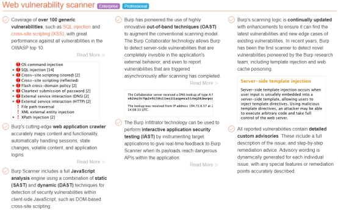
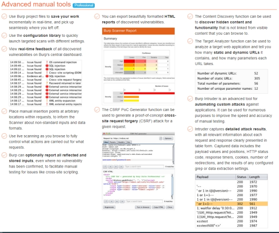
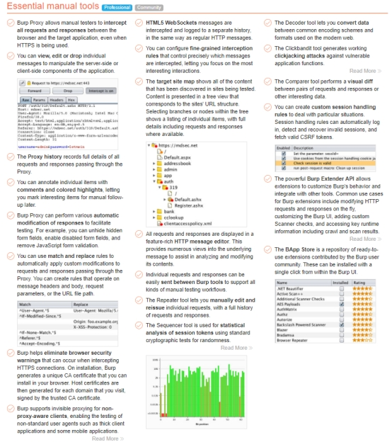
破解方法网上一搜一大堆，在这里就不多BB了，当然你也可以选择支持正版。下面我们进入正题，开始本篇的重点部分：武装Burpsuite。
本篇的介绍环境如下：
Burpsuite Pro 2020.7
Java 14.0.2 2020-07-14
因为新版的Burp好像不支持Java8了，之前用的BP1.7版本还是用的Java8。新版本的Burpsuite反正我觉得界面长的还可以。主界面如下：
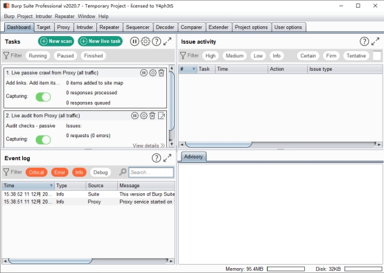
新增的功能是内置的浏览器，不用再像以前一样测试的时候浏览器和Burp疯狂切换了。
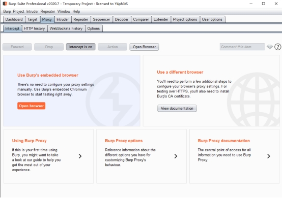
Burpsuite的武装主要是支持拓展的部分也就是模块化的拓展，在Extender模块部分可以看到当前已安装的拓展，为了演示需要我这边找了一个白板Burp
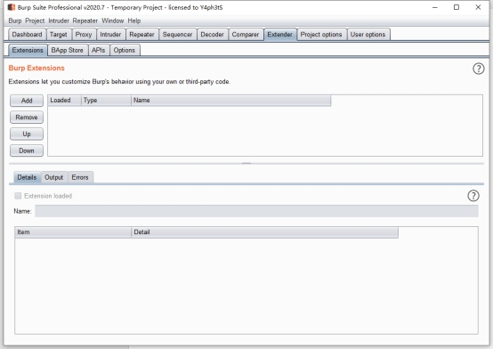
Burp的插件支持本地加载和商店直接下载，我们先来看看商店中的实用拓展：
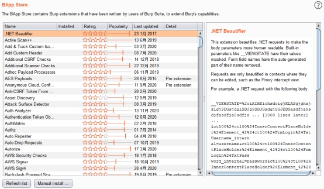
以第一个插件为例，讲讲如何从商店中安装插件，首先选中插件，将右侧栏的滚动条拖到底可以看到install按钮
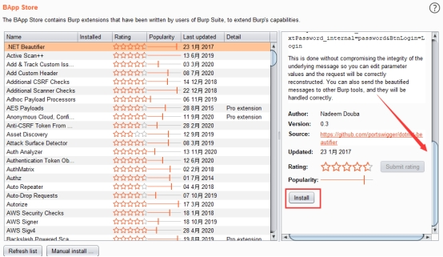
点击install后就开始了安装
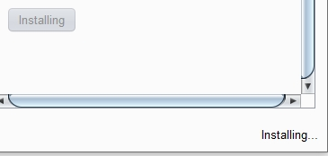
安装成功后可看到installed栏下勾上了
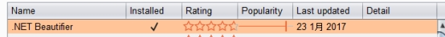
不过这玩意的效果好像比较难演示，效果演示我们就放到后面的内容中去。知道了插件的基础安装过程，接下来就是武装的过程了。
以下介绍的插件为我自己Burp中安装的一些常用插件，在渗透测试或挖洞时能让工作方便不少。
HaE
2024补充，Key师傅开发的插件，有非常多的策略可以用于各种测试，总之就是非常牛逼！！！牛逼！！还有不断更新的规则库，
使用效果如下（图是网上偷的，自己挖的洞太牛逼了就不放了）：
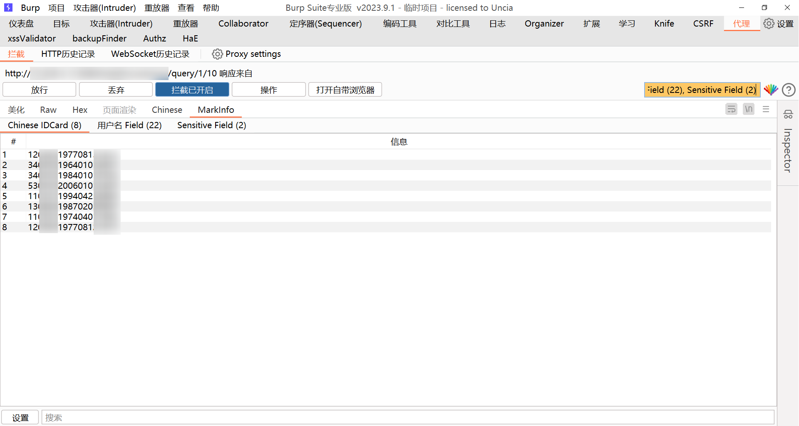
Autorize
这是一款强大的自动化越权测试工具，在商店中就可以下载。但是这款工具在安装过程中就要开始踩坑了，并不是直接安装就可以的，为了演示还特地起了一台没环境的虚拟机。
在这款工具的安装中我们可以看到需要安装Jython，因为该插件通过Python来进行支持，
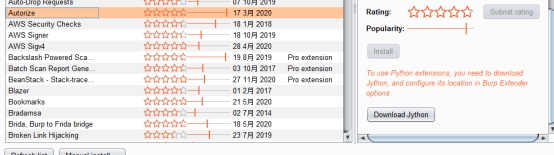
首先去https://www.jython.org/download.html下载jython并安装
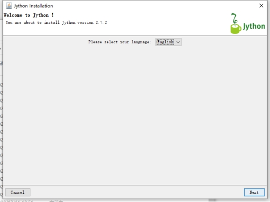
然后在Option选项中选择刚刚安装的jython路径
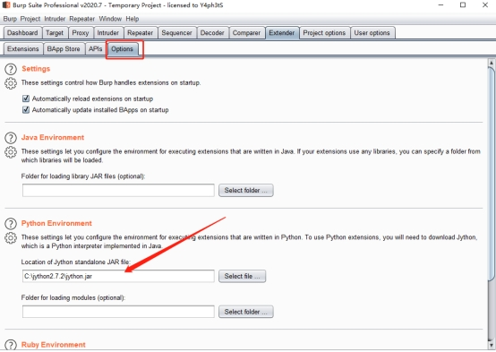
这时候在进入商店。刷新列表后即可进行安装
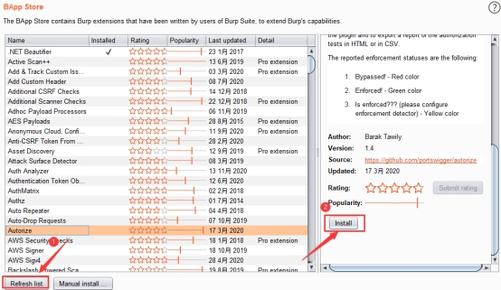
安装成功后即可在选项卡中看到Autorize
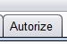
在拦截数据包部分可以看到右键选项多了发送到Autorize
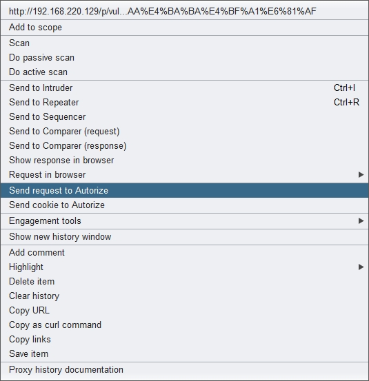
测试成功的项会变绿，即存在越权
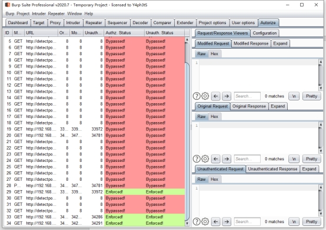
AutoRepeater
这款工具和上述的差不多，都可以直接在Burp的插件商店里找到。安装完成后的效果和之前的差不多，会多一个选项卡
可以把这个插件当做高级版的Repeater

同样通过右键发送到插件
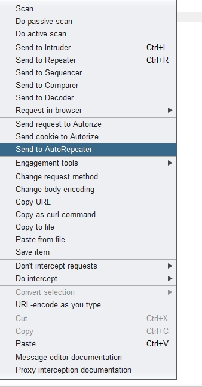
可以在右边自定义一些过滤规则，在大批量发包的时候就不用一个个手工替换会方便很多。
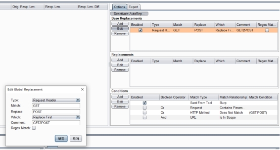
并且在多样化的规则中，这个工具同样可以测试越权，支持替换的cookie部分很多
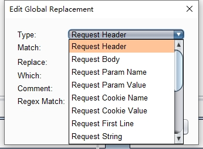
Turbo Intruder
这个工具一看就和Intruder有关，当目标服务器性能足够强并且没有限制你的发包速度的时候，可以超高速的进行爆破。首先进行插件安装，直接在Burp中就能找到。
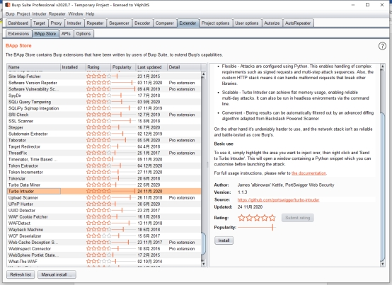
安装完成后在需要爆破的页面处选择发送
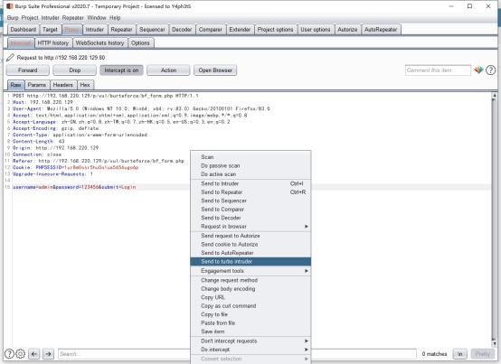
这时候会弹出一个新窗口
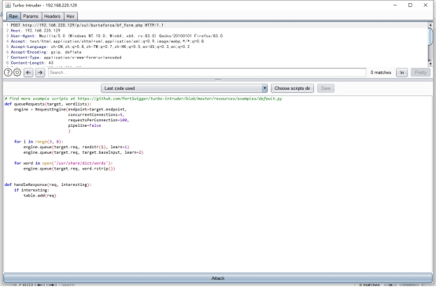
配置相关参数即可进行爆破（脚本可以自己写）在需要爆破的地方填上%s就行了，这时候我们找一个8k的字典测试一下
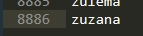
啪的一下就完成了，很快啊
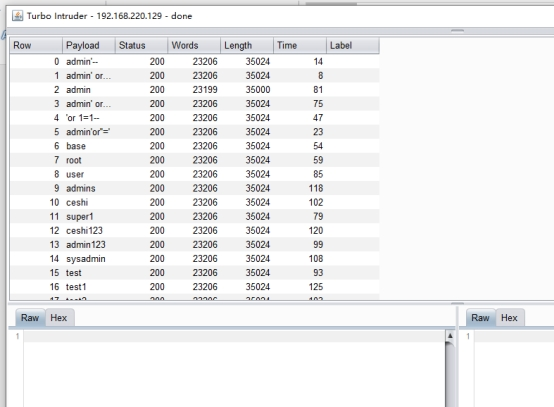
听说某大佬跑了个20多w的字典只跑了两分钟(假的)，但是在测试条件竞争漏洞上这个插件真的非常好用
Logger++
这个插件是一个增强型的历史记录显示工具，同样也在商店中
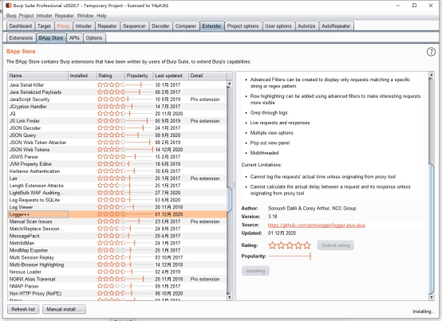
在这个插件中可以检测到大部分模块的发包，并且进行记录和筛选
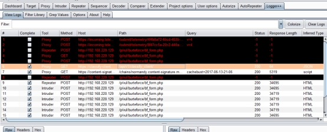
记录类型还是非常详细的
还能看到哪些包走了代理哪些没走
JSONbeautifier
这玩意可以不装，我在老版本的BP上才装，2020.7版本的BP中自带的Pretty功能已经可以实现美化JSON了
例如以下为某项目中遇到的JSON请求在Pretty和非Pretty中的对比（这个版本中美化自动开启）
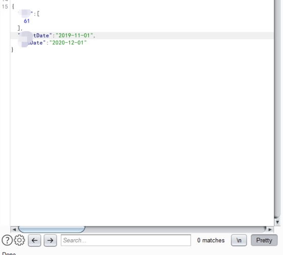
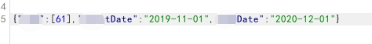
这时候可能感觉并没有明显区别，但是在包含大量数据的回包中就很明显了，如果在用老版本的小伙伴可以用这个插件实现美化。
sqlmap4burp++
上面介绍的都是BAPP里的插件，接下来讲讲怎么手动安装插件，毕竟还是有很多优秀的插件都是在Github上的。
第一个插件地址是https://github.com/c0ny1/sqlmap4burp-plus-plus
可以在release中下载作者已经编译好的版本，当然喜欢动手的大佬也可以选择自己编译
下载完成后，首先在BP的Extender中点击Add添加
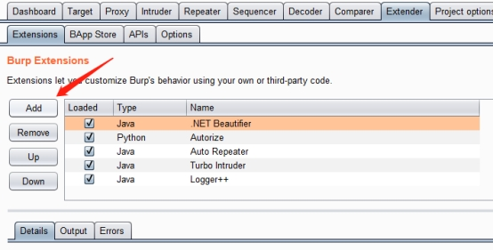
选择插件路径并添加
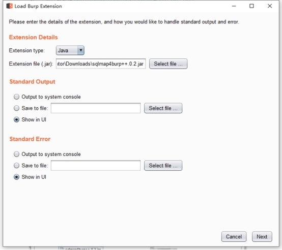
之后burp会给一个反馈
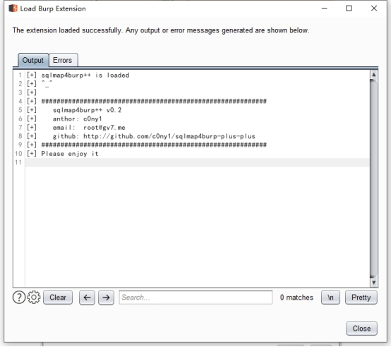
使用时将包发送到对应模块
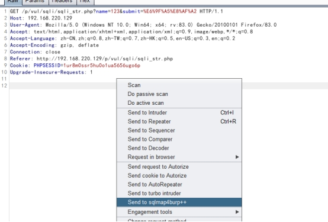
第一次使用时需要配置sqlmap 的路径和参数
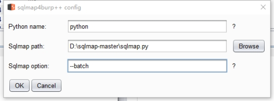
然后点击OK就可以看到直接调用sqlmap开始了测试
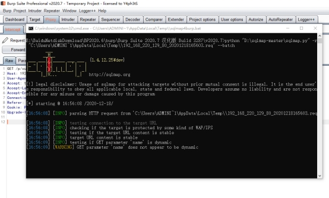
Knife
正如插件名一样，该工具为刀，可以说是瑞士军刀，毕竟有不少实用的小工具，项目地址为：
https://github.com/bit4woo/knife
还是和之前一样进行导入
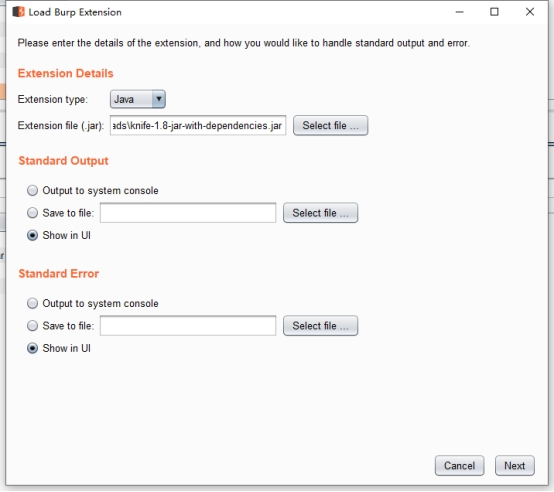
安装完成后可以看到我们的右键菜单中多了不少小工具
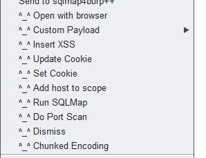
captcha-killer
这个工具是用来爆破验证码的，通过AI识别验证码的方式进行爆破，项目地址如下：
https://github.com/c0ny1/captcha-killer
安装过程就不截图了，和之前一样。
这边找了朋友的一个网站来进行测试，虽然他已经给了我账号密码，但是我们假装不知道（反正写文章的测试里也不会写真的密码），登陆页如下，可以看到带有验证码
首先进行验证码接口配置和调试，可以看到抓到的包里有验证码字段
右键发送到插件
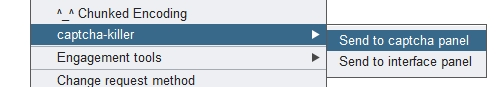
点击获取可以收到图形验证码
在模板处点击选择模板，可以自己配置，这里以百度OCR为例进行演示
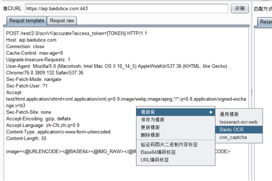
需要将识别地址替换为个人中心的API地址以及请求道的TOKEN点击识别就能在右侧栏看到相关的结果了，不过百度毕竟每天免费次数这么多，识别率不是很高，有需要的话可以购买高级识别接口

403Bypasser
这个插件是用来绕过403的，地址如下
https://github.com/sting8k/BurpSuite_403Bypasser
有时候可能对方策略配置不严格导致某目录403但是你可以请求到下面具体的文件，不截图了直接安装就行。
能被绕过的网页将在Dashboard页显示
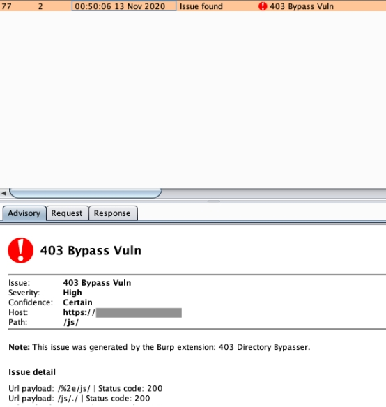
Unexpected_information Extensions
信息泄露检测插件，支持身份证信息，手机号信息，IP信息，邮箱信息，JS文件API接口路径，JS文件URL，特殊字段(password、method: “post”…#57)，JSON Web Token，Shiro(rememberMe=delete)，双向检测，高亮显示
下载地址：
https://github.com/ScriptKid-Beta/Unexpected_information
可以看到在疑似泄露数据中标出了不同的颜色
而在选项卡中也能看到
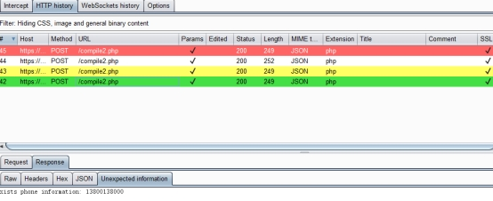
passive-scan-client
这款插件可以转发burp的被动流量，因为虽然burp内置了扫描功能，但是可能并不是特别强大，可以搭配XRAY等强大的扫描器进行扫描，地址如下：
https://github.com/c0ny1/passive-scan-client
除此之外还有大量优秀的插件，在这里就不列举了，主要是很多扫描插件都不更新了，上面主要为我自己的BP所装的一些插件，可以让平时的工作效率更高。上篇的内容就介绍到这边，下篇会给大家带来自己动手开发BP插件的教程。